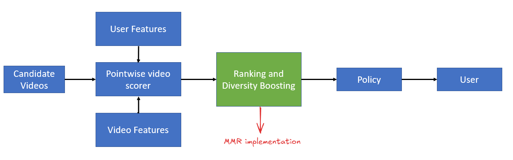

Diversity in Recommendations - Maximal Marginal Relevance (MMR)
RecSys
ML Algorithms
Author
Aayush Agrawal
Published
December 25, 2025
Beyond Accuracy: Using Maximal Marginal Relevance to create more diverse and engaging recommendations.
Figure 1: Diverse recommendations cover multiple user intents. Credit: Gemini
WarningDisclaimer
The views expressed in this blog are solely my own and are not affiliated with my employer in any way. In writing this, I have not utilized any proprietary or confidential information.
Picture this: you open YouTube looking for something to watch. The algorithm shows you 10 videos, and they’re all basketball highlights from the same game. Sure, you like basketball, but maybe right now you’re in the mood for that ML lecture you’ve been putting off. Or maybe something else entirely.
Most recommendation systems score each item independently based on predicted relevance. The result? If your model is confident you like basketball, you get basketball. All basketball. The system optimizes for the single most likely intent while ignoring the possibility that you might have multiple interests, or that its prediction might simply be wrong.
Diversity addresses this by explicitly penalizing redundancy. Instead of asking “what’s most relevant?”, we ask “what’s most relevant that we haven’t already covered?”
This isn’t just theoretically appealing. Diversity boosting delivers real results in production systems and can dramatically improve engagement metrics. Nobel laureate Harry Markowitz called diversification “the only free lunch in finance” when applied to portfolio management. The same principle applies to recommendations: hedge your bets across the user’s possible intents.
In this post, we’ll:
Explain why diversity matters and when pointwise scoring fails
Introduce Maximal Marginal Relevance (MMR), a simple and battle-tested diversity method
Walk through the algorithm step-by-step with code
Explore how the λ parameter lets you tune the quality-diversity tradeoff
Why Diversity Matters
Recommendation systems face a fundamental challenge: they don’t know what the user wants right now. They have historical signals, but a user who watched NBA highlights yesterday might be looking for a cooking video today. A user who binges Peppa Pig with their kids on weekends has different needs on a Tuesday night.
Pointwise ranking models score each candidate independently. If your embedding space clusters similar content together (as it should), similar items receive similar scores. The top-K results end up being variations of the same thing.
This creates several problems:
Missed opportunities: If the user’s current intent doesn’t match your top prediction, you’ve wasted valuable screen real estate
Filter bubbles: Users get stuck in narrow content loops, reducing long-term engagement
Poor fault tolerance: When your model is wrong about intent, it’s wrong across the entire slate
Diversity isn’t unique to recommendations. Portfolio managers diversify across asset classes to reduce risk. Autonomous driving systems like IntentNet diversify over possible agent intents rather than betting on a single predicted trajectory. The core insight is the same: when you’re uncertain about what the environment wants, spread your bets.
The business case is compelling. Users who see a mix of content that spans their interests are more likely to find something they want right now, and more likely to come back.
The Problem Setup
Let’s make this concrete with an example. Imagine you have 6 candidate videos for a user:
Code
import numpy as npimport pandas as pdfrom fastcore.utils import Lfrom sklearn.metrics.pairwise import cosine_similarityrelevance = np.array([0.9, 0.85, 0.8, 0.7, 0.6, 0.5])genre = L(['Action', 'Action', 'Action', 'Comedy', 'Documentary', 'Mixed comedy/documentary'])df = pd.DataFrame({'video_id': [i for i inrange(len(relevance))],'genre': genre,'relevance': relevance})df
video_id
genre
relevance
0
0
Action
0.90
1
1
Action
0.85
2
2
Action
0.80
3
3
Comedy
0.70
4
4
Documentary
0.60
5
5
Mixed comedy/documentary
0.50
Pure relevance ranking returns: Action, Action, Action, Comedy, Documentary, Mixed
The top three slots go to nearly identical content. If the user wanted comedy, they have to scroll past three action videos. If they wanted a documentary, it’s buried at position 5.
Now consider what happens with diversity-aware ranking: Action, Comedy, Documentary, Action, Mixed
The slate now covers three distinct genres in the top three positions. The second action video drops to position 4 since its marginal value is low once we’ve already shown an action video.
This is the core insight: marginal relevance matters more than absolute relevance. The 3rd action video isn’t 3x as valuable as the first. Each additional similar item has diminishing returns.
We can represent each video as an embedding vector over genres:
embeddings = np.array([ [1.0, 0.0, 0.0], # video 0: pure action [0.9, 0.1, 0.0], # video 1: action (very similar to 0) [0.8, 0.2, 0.0], # video 2: action (also very similar to 0) [0.0, 1.0, 0.0], # video 3: comedy [0.0, 0.0, 1.0], # video 4: documentary [0.1, 0.5, 0.5], # video 5: mixed])similarities = cosine_similarity(embeddings)print(f"Similarity b/w Video 0 and 1 is {similarities[0,1]:.2f}")print(f"Similarity b/w Video 0 and 3 is {similarities[0,3]:.2f}")
Similarity b/w Video 0 and 1 is 0.99
Similarity b/w Video 0 and 3 is 0.00
Videos 0 and 1 have cosine similarity near 1.0. Videos 0 and 3 are orthogonal (similarity = 0). This similarity structure is exactly what MMR exploits to rerank results.
selected_items = set of items already chosen for the slate
λ = trade-off parameter between relevance and diversity (0 to 1)
You can see the first part λ × Rel(item, user) is just relevance. The second part (1-λ) × Max(Sim(item, selected_items)) is the diversity penalty.
The algorithm is greedy and iterative:
First pick: Select the item with highest relevance (the similarity penalty term is zero since nothing has been selected yet)
Subsequent picks: For each remaining candidate, compute relevance minus a penalty for similarity to the most similar already-selected item. Pick the candidate with the highest score.
Repeat until you’ve filled K slots
The key insight is the Max in the second term. You’re penalized based on your similarity to whichever selected item you’re most similar to. Being different from 2 out of 3 selected items doesn’t help if you’re a near-duplicate of the third.
The λ parameter controls the tradeoff:
λ = 1.0 → Pure relevance ranking, no diversity
λ = 0.0 → Maximum diversity, ignore relevance
λ = 0.5 → Equal weight to both
λ = 0.7 → The paper’s suggested starting point
Walking Through MMR Step-by-Step
Let’s trace through the algorithm by hand before writing any code.
Step 1: First selection
With an empty slate, there’s no diversity penalty.
We pick the highest relevance item: Video 0 (Action, relevance = 0.9).
Step 2: Second selection
Now we need to choose between the remaining videos. Let’s compare Video 1 (another Action, relevance=0.85) vs Video 3 (Comedy, relevance=0.7)
lam =0.5video_1_mmr_score = lam * relevance[1] - (1-lam) * cosine_similarity(embeddings[[1]], embeddings[[selected_item]])video_3_mmr_score = lam * relevance[3] - (1-lam) * cosine_similarity(embeddings[[3]], embeddings[[selected_item]])print(f"MMR score of Video 1: {video_1_mmr_score.item():.3f}")print(f"MMR score of Video 3: {video_3_mmr_score.item():.3f}")
MMR score of Video 1: -0.072
MMR score of Video 3: 0.350
Video 3 wins despite having lower relevance. The similarity penalty makes Video 1’s score negative. This is MMR in action: redundancy is penalized so heavily that a lower-quality diverse item beats a high-quality duplicate.
The full implementation
def mmr_select(relevance, embeddings, k=3, lam=0.5): n =len(relevance) selected = [] remaining =list(range(n))# First pick: pure relevance (no penalty term) first =int(np.argmax(relevance)) selected.append(first) remaining.remove(first)# Subsequent picks: balance relevance vs redundancywhilelen(selected) < k: best_score, best_idx =-float('inf'), Nonefor i in remaining:# Penalty = similarity to most similar already-selected item max_sim =max(similarities[i, j] for j in selected) mmr_score = lam * relevance[i] - (1- lam) * max_simif mmr_score > best_score: best_score, best_idx = mmr_score, i selected.append(best_idx) remaining.remove(best_idx)return selected
result = mmr_select(relevance, embeddings, k=3, lam=0.5)print(genre[result])
['Action', 'Comedy', 'Documentary']
Pure relevance ranking would give us Action, Action, Action. MMR gives us Action, Comedy, Documentary. Three genres covered in three slots.
Tuning λ: The Quality-Diversity Tradeoff
The λ parameter is your dial between relevance and diversity. Let’s see how it affects the ranking:
for lam in [0.3, 0.5, 0.7, 0.9, 1.0]: result = mmr_select(relevance, embeddings, k=6, lam=lam)print(f"λ={lam}: {genre[result]}")
At λ=1.0 we recover pure relevance ranking. As λ decreases, diverse items get promoted earlier in the slate.
Choosing λ in practice:
Start with λ=0.7 (the original paper’s suggestion)
A/B test different values against engagement metrics
System Design of Diversity Boosting
In terms of system design, diversity boosting can be added at various stages by using different techniques, but MMR falls into the class of re-rank algorithms which are typically applied after pointwise scoring.

Figure 2: Typical RecSys pipeline showing where MMR fits in the recommendation pipeline
The diagram above shows a typical recsys pipeline :
Candidate Videos → Raw pool of items to consider
Pointwise video scorer → Takes user features and video features, outputs a relevance score per video independently
Ranking and Diversity Boosting (highlighted in green) → This is where MMR lives. It takes the pointwise scores and reorders them to balance relevance with diversity
Policy → Business rules layer (e.g., content safety filters, frequency caps)
User → Final slate shown
MMR is a post-scoring reranker. The pointwise model does its job first (predicting relevance), then MMR adjusts the ordering to reduce redundancy. This is a clean separation of concerns - you don’t need to retrain your ranking model to add diversity.
Key Takeaways
Pointwise ranking has a blind spot. Scoring items independently leads to redundant results when similar items cluster in your embedding space.
Diversity hedges against uncertainty. When you don’t know the user’s current intent, covering multiple possibilities increases the chance of a hit.
MMR is simple and effective. The algorithm is greedy, easy to implement, and has powered production systems for decades.
I hope you enjoyed reading it. If there is any feedback on the code or just the blog post, feel free to reach out on LinkedIn.